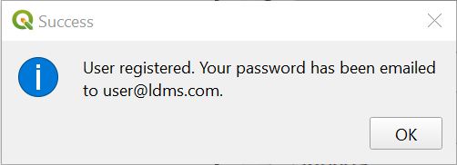
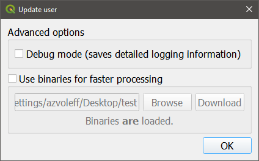

Registration and settings#

Registration#
The toolbox is free to use, but you must register an email address prior to using any of the cloud-based functions.
To register your email address and obtain a free account, select the highlighted above. This will open up the “Settings” dialog box:
To Register, click the “Step 1: Register” button. Enter your email, name, organization and country(within North Africa region) of residence and select “Ok”:

You will see a meesage indicating your user has been registered:
After registering, you will receive an email from info@promiseevnts.co.ke(for testing) with your password. Once you receive this email, click on “Step 2: Enter login”. This will bring up a dialog asking for your email and password. Enter the password you received from info@promiseevnts.co.ke(for testing) and click “Ok”:

You will see a message indicating you have successfully been logged in:

Updating your user#
If you already are registered for LDMS but want to change your login information; update your name, organization, or country; or delete your user, click on “Update user” from the “Settings” dialog.

If you want to change your username, click on “Change user”. Note that this function is only useful if you already have another existing LDMS account you want to switch to. To register a new user, see Registration. To change your user, enter the email and password you wish to change to and click “Ok”:
If you want to update your profile, click on “Update profile”. Update your information in the box that appears and click “Save”:
To delete your user, click “Delete user”. A warning message will appear. Click “Ok” if you are sure you want to delete your user:
Forgot password#
If you forget your password, click on “Reset password” from the settings dialog box.
A password will be sent to your email. Please check your Junk folder if you cannot find it within your inbox. The email will come from info@promiseevnts.co.ke(for testing).
Once you receive your new password, return to the “Settings” screen and use “Step 2: Enter login” to enter your new pasword.
Advanced settings#
Click “Edit advanced options” to bring up the advanced settings page:
